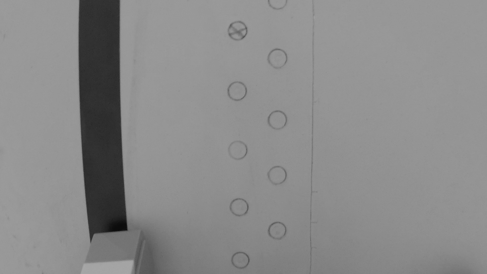
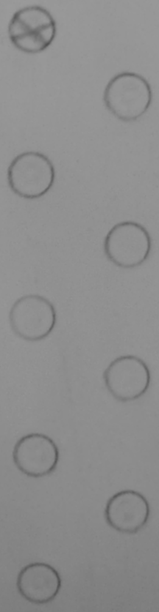
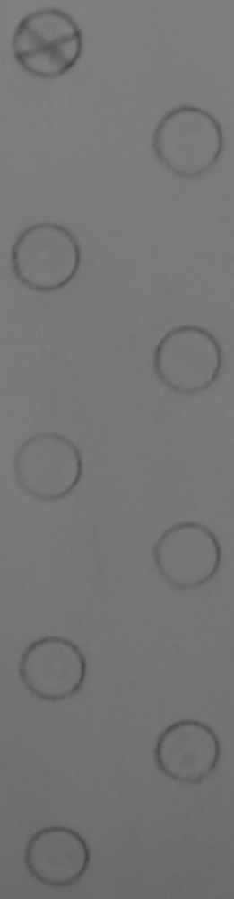
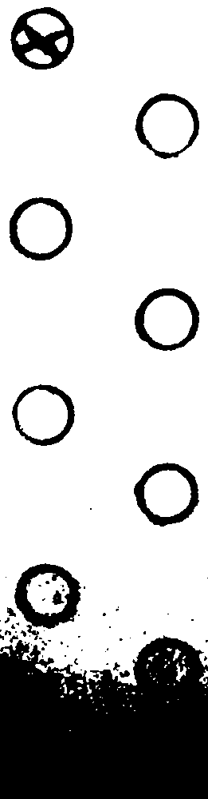
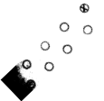
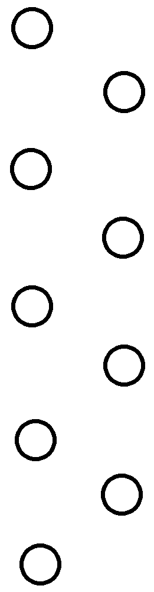

Partial Output of the Stages of Video Processing Algorithm
Normal

Frames are extracted from the video, so as to not repeat the same rivets
Grayscale
The frames are turned into grayscale for further processing
Cropped
The image is cropped so as to only include the rivets, this is done through a circle detection algorithm
Enhanced Contrast
The contrast is increased in the image, to allow for an easier conversion to black and white
Black and White
The image is transformed into black and white with an adequate threshold
Resized

Images are resized, decreasing from about 5MB to 250KB
Output
Finally, the frame is rotated so that the rivets form a 45-degree angle
Target
The target is created by extracting the detected rivets and their coordinates, then drawing them